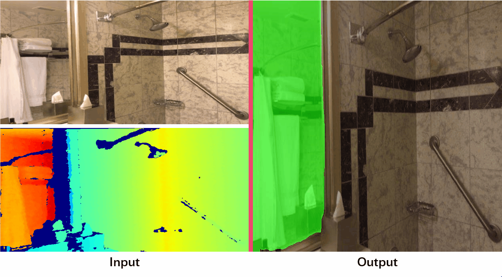

Depth-Aware Mirror Segmentation
Haiyang Mei1
Bo Dong2
Wen Dong1
Pieter Peers3
Xin Yang1,*
1
Dalian University of Technology
2
SRI International
3
College of William & Mary
|
|  |
Abstract
We present a novel mirror segmentation method that leverages depth estimates from ToF-based cameras as an additional cue to disambiguate challenging cases where the contrast or relation in RGB colors between the mirror re-flection and the surrounding scene is subtle. A key observation is that ToF depth estimates do not report the true depth of the mirror surface, but instead return the total length ofthe reflected light paths, thereby creating obvious depth dis-continuities at the mirror boundaries. To exploit depth information in mirror segmentation, we first construct a large-scale RGB-D mirror segmentation dataset, which we subse-quently employ to train a novel depth-aware mirror segmentation framework. Our mirror segmentation framework first locates the mirrors based on color and depth discontinuities and correlations. Next, our model further refines the mirror boundaries through contextual contrast taking into accountboth color and depth information. We extensively validate our depth-aware mirror segmentation method and demonstrate that our model outperforms state-of-the-art RGB and RGB-D based methods for mirror segmentation. Experimental results also show that depth is a powerful cue for mirror segmentation.
Downloads
| Paper | : [ PDNet.pdf ] |
| Experimental results | : [ Google Drive ] [ Baidu Disk, fetch cod: rrr3 ] |
| Pre-trained model | : [ Google Drive ] [ Baidu Disk, fetch cod: rtf4 ] |
| Source code | : [ Code ] |
Dataset
BibTex